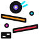

Ball Drop
A pachinko-style race for your chat. Viewers type !join and get a little pixel wheel
in their chat color on the starting line. When a mod types !start, the trapdoors drop
and everyone races down a Rube Goldberg machine built fresh for every race: ramps, flippers,
funnels, loops, springs, pins and glass pipes. First wheel into the goal wins. Or switch it to
3D, where the racers are balls rolling down one long, winding track through the night sky,
with a camera you can steer.
The real overlay with fake chatters who join, race and spam emotes. On stream the background is transparent, so the machine stands over your game or camera.
Setup guide
Get it on stream
-
Add a Browser source
In OBS click + under Sources → Browser. Paste
https://drop.ixitxachitl.com/as the URL and set it to your full canvas size, usually1920×1080. The machine fills the source, and the background is transparent automatically. - Connect your chat Right-click the source → Interact, move your mouse over the overlay and click the orange gear in the bottom-right corner. Type your Twitch and/or Kick channel name, add TikTok or YouTube if you stream there, and press Save & apply.
-
Run a race
Chat types
!jointo get on the starting line. A mod types!start(it needs at least one racer), or you press Start race next to the gear in the Interact window. Join race puts you on the line too, and New machine builds a different one for the racers already waiting. - Watch it fall The first wheel into the goal gets the winner banner and fireworks. The others get a little longer to finish, the results go up, and then a new lobby opens with a new machine.
Chat commands
!join: anyone. Puts them on the starting line, or in the next race if one's running.!start: mods and the broadcaster. Starts the race after a 3-2-1 countdown.!cam name: mods and the broadcaster, in the 3D view. Follows that racer;!cam allshows the whole course and!camgoes back to the automatic camera.- All three can be renamed in the settings, so they won't clash with your other bots.
Chat sources
Twitch & Kick
Just type the channel name. Chat is read anonymously, so there's no login and no bot account needed. Mods are recognised by their badge, and a timeout or ban takes that racer off the starting line.
TikTok
TikTok needs a bridge app running on your PC. If you use TikFinity, just type
1 in the TikTok box. Otherwise, paste your bridge's ws://… address.
YouTube
Paste your live stream's video ID or link, plus a YouTube Data API v3 key from the
Google Cloud Console. You can also give a bridge ws://… address instead.
What you'll see
- A different machine every race, built from the Stunt Wheel's parts: ramps that roll the pack back and forth across the screen, peaks that split it both ways, valleys, glass coin funnels to spiral down, pinball drains with flipping flippers, and fields of pachinko pins, dice, poker chips and pop bumpers. However it's put together there's always a way to the goal.
- Forks along the way: jumps only the faster wheels clear, trapdoors that open now and then, and glass pipes that take some wheels a few floors down in one go. Plus springs up into floating bumpers, loop-the-loops (some with a roulette wheel inside), boost pads, conveyor belts, flights of stairs, dominoes and traffic cones.
- The floors are orange track, red riveted girders, steel coaster rails and neon tubes, hung from rods, with gears turning behind them, slot machines that hit 7-7-7 now and then, and a Vegas skyline with searchlights at the bottom.
- Every racer's name always shows over their wheel. When they chat during the race, their emotes and emoji pop up in a bubble over their wheel; the words are left out, so the screen doesn't fill up with text.
- A race lasts about half a minute, and the machine is the same size at any canvas resolution. Up to 40 racers by default, and common bots are ignored.
The 3D view
Set View to 3D in the settings (or add ?view=3d) for a different race:
one long, wide track that winds down through space, built fresh every race, with banked turns,
helixes, corkscrew loops, jumps, glass funnels to spiral down through, a pachinko slope, a pinball
table with flippers, and lane splits with a boost pad down one side and a slow conveyor down the
other. The racers are glossy balls in their chat colors with their initial on them.
- The camera follows the leader by itself. In the Interact window you can drag to orbit, scroll to zoom, click a racer to follow them and double-click to go back to auto (keys: A auto, O whole course, ← → next racer).
- It's under a night sky, so unlike the 2D view the source isn't see-through. Use it as a full scene.
- It needs OBS's browser hardware acceleration (on by default). If it's slow, turn off Shadows.
Build a setup link
Settings in the URL
Every setting can also go in the URL, and it overrides what's saved. That's handy for setting up without the Interact window. (The overlay's own Copy setup link button does the same thing.) Fill in what you need and paste the link into your browser source:
ytkey works as a URL parameter too.)
All settings
| Setting | URL parameter | Default | What it does |
|---|---|---|---|
| Chat | |||
| Twitch channel | channel | — | Read anonymously, no login needed. |
| Kick channel | kick | — | Read anonymously, no login needed. |
| TikTok bridge | tiktok | — | 1 uses TikFinity on this PC, or give a ws://… bridge address. |
| YouTube live | youtube | — | Live video ID or link (needs the API key), or a bridge address. |
| YouTube API key | ytkey | — | A YouTube Data API v3 key from the Google Cloud Console. |
| YouTube check every (s) | ytpoll | 6 | Lower is snappier, but uses the daily API quota faster. |
| Ignore these names | ignore | — | Extra bot names, comma separated. Common bots are ignored already. |
| Demo chat | demo | off | Fake chatters join, race and spam emotes, for trying it out. |
| Race | |||
| Join command | joincmd | !join | Anyone in chat can type it to get a wheel in the next race. |
| Start command | startcmd | !start | Mods and the broadcaster can start the race with it. There has to be at least one racer. |
| Most racers | max | 40 | Anyone after that is told the race is full. |
| Start by itself after (s) | autostart | 0 | Counted from the first racer joining. 0 means only when someone starts it. |
| Racers stay in | keep | off | Everyone who raced is already in the next race, without joining again. |
| Time for the rest (s) | finish | 20 | How long the others get to finish after the winner. |
| Results shown for (s) | results | 12 | How long the results stay up before the next lobby opens. |
| Racers | |||
| Emote bubbles | bubbles | on | Racers' emotes and emoji pop up over their wheel when they chat. Words are left out. |
| Emote size (px) | emotesize | 28 | How big the emotes are in the bubbles. |
| Bubble time × | hold | 1 | How long a bubble stays up. |
| Name size (px) | namesize | 13 | How big the names over the wheels are. |
| Machine | |||
| Pixel size (2D) | scale | 0 (auto) | Automatic gives the same machine at any canvas size (3 at 1080p). Bigger means chunkier pixels and bigger wheels, but fewer floors. |
| Machine width (%) | width | 100 | A narrower machine stands in the middle of the source. |
| Speed × | speed | 1 | 0.5 is half speed, 2 is double. |
| Floating decorations | decor | on | Dice, chips, coins and stars drifting behind the machine. |
| Vegas skyline | scenery | on | Hotels and searchlights behind the bottom of the machine. |
| 3D view | |||
| View | view | 2d | 3d races balls down a winding 3D track under a night sky instead (not see-through). Joining, starting and the bubbles are the same. |
| Camera starts on | camera | auto | auto follows the leader; overview shows the whole course. |
| Camera command | camcmd | !cam | For mods: !cam name follows a racer, !cam all shows the whole course, !cam goes back to auto. |
| Shadows | shadows | on | Turn off if the 3D view is slow on your PC. |
| Background (testing) | bg | auto | In a normal browser the overlay shows a dark background so you can see it. bg=none makes it transparent anyway, or give a color like bg=black. In OBS it's always transparent unless you set a color. |